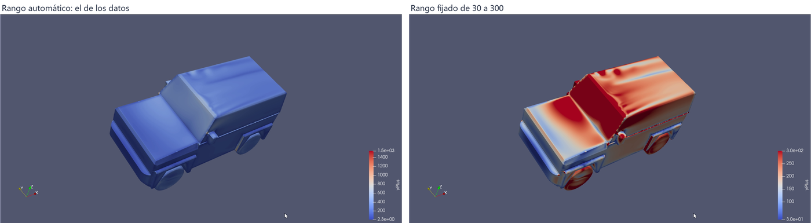
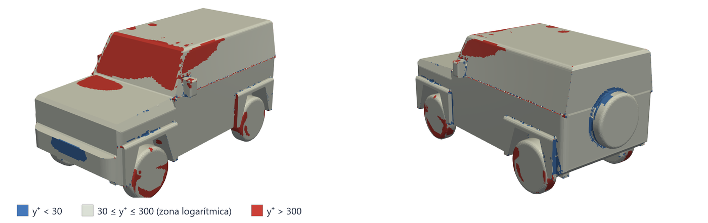

The run of Tutorial 3.2, read as numbers: the drag coefficient averaged over the settled iterations and its spread, the lift on each axle, the drag force and the power it costs at 100 km/h, where the drag comes from part by part, and whether the first cell sits where the wall functions work.
OpenFOAM · Flujo incompresible · Tutorial 3.3
Los resultados del Jimny: arrastre, levante por eje y y⁺
La corrida del tutorial 3.2, leída en números: el coeficiente de arrastre promediado sobre las iteraciones asentadas y su dispersión, el levante de cada eje, la fuerza de arrastre y la potencia que cuesta a 100 km/h, de dónde sale el arrastre parte por parte, y si la primera celda quedó donde funcionan las funciones de pared.
OpenFOAM · Inkompressible Strömung · Tutorial 3.3
Die Ergebnisse des Jimny: Widerstand, Auftrieb je Achse und y⁺
Die Rechnung aus Tutorial 3.2 in Zahlen: der Widerstandsbeiwert, gemittelt über die eingeschwungenen Iterationen, und seine Streuung, der Auftrieb je Achse, Widerstandskraft und Leistung bei 100 km/h, woher der Widerstand Teil für Teil kommt und ob die erste Zelle dort liegt, wo Wandfunktionen gelten.
Estimated reading: 40 minLectura estimada: 40 minLesedauer: ca. 40 minLevel: undergraduateNivel: licenciaturaNiveau: BachelorVerified on OpenFOAM 12 (blueCFD-Core 2024) and ParaView 5.11.2Verificado en OpenFOAM 12 (blueCFD-Core 2024) y ParaView 5.11.2Geprüft mit OpenFOAM 12 (blueCFD-Core 2024) und ParaView 5.11.2
Full English translation in preparation. Each section below carries a summary of its content; the complete text, figures and tables are available in the Spanish version, which the ES button above selects.
Turn the force file of a steady RANS run into results: average over the settled iterations, state the spread, convert coefficients into forces and power, split the drag into pressure and friction and into parts with foamPostProcess, and check y⁺ against the wall functions.
The problem
From two thousand rows to a few numbers
The run of Tutorial 3.2: 2 000 iterations of the full Jimny at 100 km/h. What is its drag coefficient, how sure is it, and what does it mean in newtons and kilowatts?
The theory
Averages, forces, pressure and friction, y⁺
Averaging a steady RANS run of a bluff body: the settled window, the spread and block averages; from coefficients to forces (½ρU²A) and power; pressure drag and friction drag; y⁺ and the log layer.
Step by step
Six commands on the finished case
Open forceCoeffs.dat; read and run the two short scripts that come with the case: promedios (averages with awk from a chosen iteration) and fuerzas (foamPostProcess -solver incompressibleFluid with forcesIncompressible, for the whole vehicle and part by part, with a summary table); read yPlus.dat; see y⁺ on the vehicle in ParaView.
Worked example
The Jimny at 100 km/h, in numbers
Cd = 0.564 ± 0.003, a drag of 636 N and 17.7 kW at 100 km/h; the front axle is unloaded by 193 N and the rear one loaded by 111 N; 1.0 % of the drag is friction; the body takes three quarters; 90 % of the body area has 30 ≤ y⁺ ≤ 300.
Common errors
What goes wrong when reading results
Averaging from the first iteration; foamPostProcess without -solver (it cannot find U and p); forces with rhoInf = 1 (per unit density).
Suggested exercise
The Jimny at 120 km/h
Run the 120 km/h case prepared in Tutorial 3.1 and compare drag coefficient, force and power.
Sources
References
Hucho on road-vehicle aerodynamics; the OpenFOAM user guide on function objects; Menter (1994); Pope (2000) for the log layer.
Objetivos de aprendizaje
Qué se debe poder hacer al terminar
El tutorial 3.2 dejó el cálculo del Jimny terminado: dos mil renglones de coeficientes, campos en la iteración 2000 y un Cd que se asentó. Esta guía convierte eso en resultados que se puedan reportar: un coeficiente con su dispersión, fuerzas en newtons, el reparto del arrastre y una revisión de que la malla junto a la pared es la que piden las funciones de pared.
Elegir la ventana de iteraciones que se promedia y calcular el promedio y la dispersión de cada coeficiente con un guion de awk.
Pasar de los coeficientes a fuerzas y a la potencia que cuesta el arrastre, y explicar qué significa el levante de cada eje.
Calcular con foamPostProcess la fuerza de presión y la de fricción sobre el vehículo entero y sobre cada una de sus partes.
Revisar la y⁺ del vehículo contra la zona en que valen las funciones de pared.
Qué hace falta. El caso del 3.2 terminado y reconstruido (la carpeta 2000 en la raíz de $FOAM_RUN/jimny). Todo lo de esta guía se hace sobre ese caso, sin volver a calcular: unos minutos en total.
El problema
De dos mil renglones a unas cuantas cifras
La función forceCoeffs escribió, en cada iteración, cinco coeficientes del Jimny a 100 km/h. ¿Cuánto vale su coeficiente de arrastre? La respuesta no es el último renglón, ni el promedio de todos: es el promedio de las iteraciones en que el cálculo ya se asentó, con una medida de cuánto se mueve. Y un coeficiente se entiende mejor en unidades: cuántos newtons empuja el aire, cuántos kilowatts cuesta vencerlo, cuánto le quita de peso a cada eje y qué parte del vehículo los pone.
No se encontró un Cd publicado del Jimny para compararlo (no aparece en las fichas técnicas consultadas); lo esperable para un vehículo de caja es del orden de 0.5 (Hucho, 1998). Cuánto se puede confiar en el número de un cálculo RANS es el tema del tutorial 3.6; aquí, cómo se obtiene y qué dice.
La teoría
Promedios, fuerzas, presión y fricción, y⁺
El promedio y su dispersión
En un cálculo estacionario de un cuerpo romo, el Cd no se queda en un valor fijo: tras el arranque, oscila alrededor de un valor que ya no cambia (tutorial 3.2). Se reporta el promedio sobre una ventana de iteraciones asentadas —aquí de la 1001 a la 2000— y su desviación estándar, que mide cuánto oscila. Para comprobar que la ventana está bien elegida se parte en tramos y se comparan sus promedios: si un tramo se aparta de los demás, la ventana todavía tiene arranque (figura 1).
Figura 1.Cómo se promedia el Cd. El Cd de cada iteración (gris), el promedio de cada tramo de 250 iteraciones (naranja) y el de 1001 a 2000 (azul, discontinuo). Los dos primeros tramos todavía están bajando; desde la iteración 1001, los cuatro promedios quedan entre 0.563 y 0.564. Promediar desde el principio daría 0.611, un 8 % más.
La desviación estándar dice cuánto se mueve el número de una iteración a otra, no cuánto se equivoca el cálculo. El error del modelo de turbulencia, de la malla o del túnel virtual es otro asunto, y casi siempre mayor (tutorial 3.6).
De los coeficientes a las fuerzas
Los coeficientes se definieron con la presión dinámica y el área frontal (ecuación 1 del tutorial 3.1). Despejando, con la densidad del aire \(\rho\) = 1.2 kg/m³:
\(\tfrac12\rho U_\infty^2 A\) vale 1 127 N para el Jimny a 100 km/h. La potencia \(P\) es la que el motor entrega sólo para vencer el aire; como \(F_D\) crece con \(U_\infty^2\), la potencia crece con \(U_\infty^3\). Con los coeficientes de levante de cada eje pasa lo mismo: \(C_{L,f}\,\tfrac12\rho U_\infty^2 A\) es la fuerza con que el aire levanta el eje delantero, y una fuerza negativa carga el eje en lugar de descargarlo.
Arrastre de presión y arrastre de fricción
El aire empuja la superficie del vehículo de dos maneras: perpendicular a cada cara, con la presión, y a lo largo de ella, con el esfuerzo cortante de la capa límite. Sumando sobre toda la superficie, la componente en la dirección del flujo de cada una da el arrastre de presión y el de fricción. En un perfil delgado a poco ángulo (tutorial 2.1) los dos pesan; en un cuerpo romo, que deja detrás una estela despegada con la presión baja, el de presión domina. La función forcesIncompressible los da por separado, y para la región de la superficie que se le pida.
La y⁺ y las funciones de pared
Como en el tutorial 1.2, las funciones de pared suponen que la primera celda cae en la zona logarítmica de la capa límite. La regla práctica habitual es \(30 \lesssim y^+ \lesssim 300\): por debajo, la celda entra en la zona de transición; por encima, puede salirse de la capa límite. En un vehículo nunca se cumple en toda la superficie, porque el esfuerzo cortante cambia mucho de un lugar a otro; lo que se revisa es qué fracción del área cumple y dónde están las que no.
Paso a paso
Seis comandos sobre el caso terminado
Todo en la carpeta del caso (cd $FOAM_RUN/jimny): la terminal de blueCFD-Core, un editor de texto y ParaView. Los cálculos los hacen dos guiones cortos que vienen en jimny.zip, promedios y fuerzas, como Allrun, y como él sin extensión: un doble clic en el Explorador no los ejecuta, sino que Windows pregunta con qué programa abrirlos. Se abren en el editor para ver qué hacen (cada renglón está comentado) y se corren con un comando corto. Si el caso se preparó con una copia anterior del .zip, que no los traía, se copian de la descarga a la carpeta del caso.
Mirar el archivo de coeficientes, postProcessing/forceCoeffs1/0/forceCoeffs.dat, en el editor: un encabezado con las referencias, y un renglón por iteración con Time Cm Cd Cl Cl(f) Cl(r).
Los promedios: abrir promedios en el editor, y correrlo con la iteración desde la que se promedia:
./promedios 1000
Escribe el promedio y la desviación estándar de los cinco coeficientes, de la iteración 1001 a la última.
Las fuerzas: abrir fuerzas en el editor, y correrlo (tarda medio minuto):
./fuerzas
Corre foamPostProcess una vez para el vehículo entero y una para cada parte, deja cada salida en log.fuerzas_<parte> y al final escribe una tabla con el arrastre de cada parte: presión, fricción, total, porcentaje y aporte al \(C_D\).
La y⁺: abrir en el editor postProcessing/yPlus/0/yPlus.dat, el archivo de la función yPlus, e ir al final (Ctrl+Fin): los últimos siete renglones son los de la iteración 2000, uno por parche. Luego, en ParaView (paraFoam): en Mesh Regions, sólo group/jimnyGroup; Apply, la última iteración, colorear por yPlus y fijar el rango de 30 a 300 (Rescale to Custom Range): la escala abarca la zona logarítmica, y los extremos marcan lo que se sale, el azul más oscuro \(y^+ \le 30\) y el rojo más oscuro \(y^+ \ge 300\).
Ejemplo resuelto
El Jimny a 100 km/h, en cifras
Las salidas son las de la corrida del tutorial 3.2; los fragmentos, de la exploración de esta guía sobre el caso terminado.
1. Los coeficientes
El guion de los promedios es un solo comando de awk, con comentarios que explican cada parte:
promedios
#!/bin/sh
cd ${0%/*} || exit 1 # correr desde la carpeta del caso
# Promedio y desviación estándar de los cinco coeficientes que escribe forceCoeffs, de una iteración en adelante.
#
# ./promedios 1000 promedia de la iteración 1001 a la última
# ./promedios lo mismo (1000 es el valor por omisión)
#
# La iteración se elige mirando antes la gráfica del Cd (foamMonitor, tutorial 3.2): el promedio no debe incluir
# el arranque, cuando los coeficientes todavía están lejos de su valor final.
DESDE=${1:-1000}
ARCHIVO=postProcessing/forceCoeffs1/0/forceCoeffs.dat
# awk lee el archivo renglón por renglón:
# !/^#/ salta el encabezado (los renglones que empiezan con #)
# $1 > desde sólo las iteraciones posteriores a DESDE ($1 es la primera columna: Time)
# s[i] y q[i] suman cada columna (2 a 6: Cm Cd Cl Cl(f) Cl(r)) y su cuadrado
# END al terminar: la media m = s/n y la desviación estándar sqrt(q/n - m²)
awk -v desde="$DESDE" '
!/^#/ && $1 > desde { n++; ultima = $1; for (i = 2; i <= 6; i++) { s[i] += $i; q[i] += $i * $i } }
END {
split("Cm Cd Cl Cl(f) Cl(r)", nombre)
printf "Iteraciones %d a %d (%d renglones)\n\n", desde + 1, ultima, n
print " promedio desviación estándar"
for (i = 2; i <= 6; i++) {
m = s[i] / n
printf "%-6s %11.4f %11.4f\n", nombre[i - 1], m, sqrt(q[i] / n - m * m)
}
}' $ARCHIVO
#------------------------------------------------------------------------------
Su salida:
Iteraciones 1001 a 2000 (1000 renglones)
promedio desviación estándar
Cm 0.1348 0.0037
Cd 0.5637 0.0030
Cl 0.0725 0.0100
Cl(f) 0.1710 0.0052
Cl(r) -0.0985 0.0071
El Cd del Jimny es 0.564 ± 0.003. La tabla 1 reúne los cinco coeficientes y sus fuerzas. Los promedios de los cuatro tramos de 250 iteraciones entre la 1001 y la 2000 quedan entre 0.5629 y 0.5644: el promedio está bien determinado, mucho mejor que lo que oscila cada iteración.
Coeficiente
Promedio
Desviación
Fuerza [N]
Qué es
\(C_D\)
0.564
0.003
636
el arrastre
\(C_L\)
0.072
0.010
82
el levante total
\(C_{L,f}\)
0.171
0.005
193
el levante del eje delantero: lo descarga
\(C_{L,r}\)
−0.099
0.007
−111
el del trasero: negativo, lo carga
\(C_m\)
0.135
0.004
—
el cabeceo, alrededor del punto medio entre ejes
Tabla 1.Los coeficientes del Jimny. Promedio y desviación estándar de las iteraciones 1001 a 2000 de forceCoeffs.dat, y la fuerza que corresponde con ρ = 1.2 kg/m³ (½ρU²A = 1 127 N). Positivo: hacia atrás (arrastre), hacia arriba (levante) y nariz arriba (momento).
Con la ecuación (1), el aire empuja al Jimny hacia atrás con unos 636 N, y vencerlo a 100 km/h cuesta 17.7 kW. A 120 km/h el arrastre crece con el cuadrado de la velocidad y la potencia con el cubo: un 73 % más (práctica sugerida).
El levante total es pequeño (\(C_L\) = 0.072), pero no se reparte igual: el eje delantero recibe 193 N hacia arriba y el trasero 111 N hacia abajo (figura 2). El aire descarga la dirección y carga la tracción trasera. Las dos oscilan más que el Cd, en proporción, y también se reportan con su promedio.
Figura 2.El levante por eje. Los coeficientes \(C_{L,f}\) y \(C_{L,r}\) de forceCoeffs.dat. Se asientan con el Cd: el eje delantero queda con levante positivo (el aire lo descarga) y el trasero con levante negativo (lo carga).
2. Presión y fricción
El guion de las fuerzas corre foamPostProcess con la función forcesIncompressible siete veces, cambiando sólo la lista de parches:
fuerzas
#!/bin/sh
cd ${0%/*} || exit 1 # correr desde la carpeta del caso
# La fuerza de arrastre sobre el Jimny entero y sobre cada una de sus partes, en newtons, separada en presión y
# fricción, en la última iteración escrita (por ejemplo, 2000 después de reconstructPar).
#
# ./fuerzas
#
# Para cada parte corre foamPostProcess con la función forcesIncompressible; su salida completa queda en
# log.fuerzas_<parte>. Al final escribe una tabla con la componente x (el arrastre) de cada parte.
RHO=1.2 # densidad del aire [kg/m³]: el solver trabaja con p/rho, y rhoInf la vuelve a multiplicar
U=$(foamDictionary system/forceCoeffs -entry forceCoeffs1/magUInf -value) # velocidad de referencia [m/s]
A=$(foamDictionary system/forceCoeffs -entry forceCoeffs1/Aref -value) # área frontal [m²]
PARTES="carroceria bajos ruedasDelanteras ruedasTraseras refaccion espejos"
for parte in jimnyGroup $PARTES
do
echo "foamPostProcess: $parte"
# -solver incompressibleFluid: que lea los campos y el modelo de turbulencia como el solver
# CofR y pitchAxis son los de system/forceCoeffs (para los momentos, que aquí no se usan)
foamPostProcess -solver incompressibleFluid -latestTime \
-func "forcesIncompressible(patches=($parte), rhoInf=$RHO, CofR=(1.755 0 0), pitchAxis=(0 1 0))" \
> log.fuerzas_$parte 2>&1
done
# De cada registro, la componente x de «pressure» y de «viscous» bajo «sum of forces»
fx () {
awk '/sum of forces/ { f = 1 }
f && /pressure/ { gsub(/[()]/, ""); p = $3 }
f && /viscous/ { gsub(/[()]/, ""); print p, $3; exit }' log.fuerzas_$1
}
TOTAL=$(fx jimnyGroup | awk '{ print $1 + $2 }')
echo
echo "rho = $RHO kg/m3, U = $U m/s, A = $A m2"
echo
echo "parte presión fricción total % aporte"
echo " [N] [N] [N] al Cd"
for parte in $PARTES jimnyGroup
do
# % del total y aporte al Cd: la fuerza entre la del Jimny entero y entre ½ rho U² A
fx $parte | awk -v parte=$parte -v total=$TOTAL -v rho=$RHO -v U=$U -v A=$A '
{ t = $1 + $2; printf "%-17s %8.2f %9.2f %8.2f %6.1f %8.4f\n", parte, $1, $2, t, 100 * t / total, t / (0.5 * rho * U * U * A) }'
done
#------------------------------------------------------------------------------
-func le pasa a foamPostProcess una función con sus parámetros; rhoInf=$RHO devuelve la presión cinemática del solver a pascales; -solver incompressibleFluid hace que lea los campos y el modelo de turbulencia como el solver, sin lo cual no puede calcular nada (sección «Errores frecuentes»). La velocidad y el área las lee de system/forceCoeffs con foamDictionary, para no escribirlas dos veces. Lo que escribe foamPostProcess para el vehículo entero, en log.fuerzas_jimnyGroup:
sum of forces:
pressure : (633.05 -3.18604 70.7666)
viscous : (6.22645 -0.795903 0.255584)
Las fuerzas vienen en componentes (x, y, z): x es el arrastre, z el levante. El arrastre es 633.05 N de presión más 6.23 N de fricción: 639.3 N, con sólo el 1.0 % de fricción. Es la firma de un cuerpo romo. Y es la comprobación de que todo cuadra: entre ½ρU²A,
La tabla 2 y la figura 3 la reúnen con el resto; las seis partes suman 639.28 N, el total.
Región
Presión [N]
Fricción [N]
Total [N]
% del total
Aporte al \(C_D\)
carrocería
491.7
1.42
493.1
77.1
0.4374
bajos
51.7
1.43
53.1
8.3
0.0471
ruedas delanteras
40.1
1.75
41.9
6.6
0.0372
ruedas traseras
25.1
1.54
26.6
4.2
0.0236
refacción
23.1
−0.01
23.1
3.6
0.0205
espejos
1.3
0.09
1.4
0.2
0.0013
total (jimnyGroup)
633.0
6.23
639.3
100
0.5670
Tabla 2.De dónde sale el arrastre. La fuerza en x (arrastre) sobre cada región en la iteración 2000, de foamPostProcess con forcesIncompressible y ρ = 1.2 kg/m³: la parte de presión y la de fricción (viscosa), en newtons. La última columna es su contribución al \(C_D\): la fuerza entre ½ρU²A.
Figura 3.De dónde sale el arrastre. La fuerza de arrastre sobre cada región en la iteración 2000, de foamPostProcess: presión (azul) y fricción (naranja). La fricción apenas se ve: es el 1.0 % del total. La carrocería se lleva tres cuartas partes; la llanta de refacción, colgada atrás, pone casi tanto como las dos ruedas traseras.
La carrocería se lleva tres cuartas partes del arrastre: el frente plano y la cola recta. Los bajos y las ruedas, que en un auto aerodinámico pesan mucho, aquí suman algo menos de la quinta parte. La llanta de refacción, colgada en la puerta trasera, pone el 3.6 % por sí sola: casi lo mismo que las dos ruedas traseras. Los espejos, apenas nada. En la fricción el orden cambia: las cuatro ruedas, que giran contra el aire, ponen 3.3 de los 6.2 N, y la carrocería, con 5 veces su área, sólo 1.4 N.
Las columnas son el mínimo, el máximo y el promedio de cada parche. El promedio de cada región del Jimny cae en la zona logarítmica; los máximos, no. La tabla 3 dice cuánta área está en cada banda: el 90 % de la carrocería tiene \(30 \le y^+ \le 300\), el 8 % pasa de 300 y el 2 % queda por debajo de 30. Las ruedas delanteras son las que más se salen por arriba (24 %). El suelo (lowerWall) no lleva capas y su y⁺ es mayor, pero su esfuerzo no entra en las fuerzas del vehículo.
Región
Área [m²]
y⁺ < 30
30 a 300
y⁺ > 300
Promedio
Máximo
carrocería
21.21
1.8 %
89.8 %
8.3 %
182
2 499
bajos
2.66
2.7 %
88.9 %
8.4 %
161
913
ruedas delanteras
2.06
0.0 %
75.9 %
24.1 %
250
515
ruedas traseras
2.05
0.0 %
80.6 %
19.4 %
253
493
refacción
0.69
7.7 %
92.3 %
0.0 %
152
274
espejos
0.22
3.5 %
69.0 %
27.5 %
224
1 275
Tabla 3.La y⁺ de cada región, por área. Fracción del área de cada región según su y⁺ en la iteración 2000 (función yPlus, pesada por el área de cada cara); la zona logarítmica, donde valen las funciones de pared, va de 30 a 300. Las dos últimas columnas son las de yPlus.dat.
En ParaView (paso 4 de la receta), el rango automático no sirve para esto: se fija de 30 a 300 (figura 4). La figura 5 es la misma información en tres bandas, por delante y por detrás.

Figura 4.La y⁺ en ParaView, antes y después de fijar el rango. Con el rango automático (izquierda), unas pocas caras con la y⁺ muy alta estiran la escala y casi todo el vehículo queda del mismo azul. Con el rango fijado de 30 a 300 (derecha) se ve la zona logarítmica completa: el rojo más oscuro pasa de 300 (el parabrisas, el frente del cofre), el azul más oscuro queda por debajo de 30. La escala automática es la de los datos interpolados a los vértices, distinta de la de yPlus.dat, que es por cara. Fotogramas del vídeo de esta guía.

Figura 5.La y⁺ sobre el Jimny. Las seis regiones del vehículo en la iteración 2000, coloreadas por la y⁺ de cada cara en tres bandas: menos de 30 (azul), la zona logarítmica de 30 a 300 (gris claro) y más de 300 (rojo). Casi todo el vehículo está en la zona logarítmica. La y⁺ crece con el esfuerzo cortante: es baja donde el aire casi se detiene, como el centro de la defensa, y alta en el parabrisas, el frente del cofre y algunas aristas. Render de ParaView sin ventana.
El Jimny a 100 km/h: \(C_D\) = 0.564 ± 0.003, 636 N de arrastre y 17.7 kW para vencerlo; 193 N de levante en el eje delantero y 111 N de carga en el trasero; un arrastre casi todo de presión (99 %), tres cuartas partes en la carrocería; y la primera celda en la zona logarítmica en el 90 % de la carrocería. Cómo se ve ese flujo es el tutorial 3.4; cuánto confiar en el número, el 3.6.
Errores frecuentes
Qué sale mal al leer los resultados
Los resultados son reales: se obtuvieron sobre una copia del caso terminado.
1. Promediar desde el principio
./promedios 0
Iteraciones 1 a 2000 (2000 renglones)
promedio desviación estándar
Cm 0.1721 0.0862
Cd 0.6108 0.1253
Cl 0.0581 0.0762
Cl(f) 0.2012 0.0644
Cl(r) -0.1431 0.1167
Desde la iteración 1, el promedio incluye el arranque, cuando el Cd pasaba de 2: da 0.611, un 8 % más, con una desviación estándar 41 veces mayor; y el número no avisa de que está mal. Remedio: mirar la gráfica (foamMonitor o la figura 1) antes de elegir la ventana, y comprobarla con promedios por tramos.
2. foamPostProcess sin -solver
--> FOAM FATAL ERROR:
Could not find U, p
From function void Foam::functionObjects::forcesBase::initialise()
Es lo que se obtiene al quitar -solver incompressibleFluid del guion (o al escribir el comando a mano sin él): foamPostProcess no lee los campos ni el modelo de turbulencia que necesita la función. Remedio: agregarlo, con el nombre del solver que está en system/controlDict.
3. Las fuerzas con rhoInf=1
sum of forces:
pressure : (527.542 -2.65504 58.9722)
viscous : (5.18871 -0.663252 0.212987)
Con RHO=1 en el guion (rhoInf=1, como en system/forceCoeffs), nada se queja, y el arrastre sale en 532.7: son newtons por cada kg/m³ de densidad, porque el solver incompresible trabaja con la presión dividida entre la densidad. Multiplicado por 1.2 da los 639.3 N. Remedio: dar siempre la densidad del aire, y desconfiar de una fuerza que no se haya comparado con su coeficiente.
Práctica sugerida
El Jimny a 120 km/h
El Jimny a 120 km/h: ¿cambia el coeficiente, o sólo la fuerza?
Enunciado. Correr el caso a 120 km/h que se preparó en la práctica sugerida del tutorial 3.1 (la secuencia del 3.2, unas dos horas) y obtener sus resultados con esta guía.
Condiciones. El mismo vehículo, el mismo túnel y la misma receta de malla; la ventana de promedio se elige mirando su gráfica.
El procedimiento, en corto
Correr el caso de 120 km/h con los pasos del tutorial 3.2.
Con los pasos 2 a 6 de la receta, llenar el renglón de 120 km/h de la tabla 4; en forcesIncompressible no cambia nada, porque la velocidad no entra.
Comparar la fuerza obtenida con la escalada de la de 100 km/h.
Registro de resultados
Velocidad
\(C_D\) (1001–2000)
Arrastre [N]
Arrastre escalado [N]
Potencia [kW]
y⁺ promedio, carrocería
100 km/h
0.564
636
—
17.7
182
120 km/h
915
Tabla 4.Registro de la práctica. El renglón de 100 km/h es el de esta guía; el de 120 km/h se llena con la corrida del caso de la práctica del tutorial 3.1. «Escalada» es la fuerza de 100 km/h multiplicada por (120/100)².
Preguntas que orientan la lectura
¿Cambió el Cd? Si cambió poco, ¿por qué se esperaba (piense en el número de Reynolds y en un cuerpo de aristas vivas)?
¿Cuánto más potencia cuesta el aire a 120 km/h que a 100? ¿Qué parte de la potencia de un motor de 75 kW es?
¿Qué pasó con la y⁺ de la carrocería, y por qué? ¿Sigue en la zona logarítmica?
Menter, F. R. (1994). Two-equation eddy-viscosity turbulence models for engineering applications. AIAA Journal, 32(8), 1598–1605.
OpenFOAM Foundation. (2024). OpenFOAM user guide, version 12, sección «Function objects» (funciones forceCoeffs, forces y yPlus). https://doc.cfd.direct/openfoam/user-guide-v12/
Pope, S. B. (2000). Turbulent flows. Cambridge University Press. (Capítulo 7, la capa logarítmica.)
Las salidas son de la corrida del tutorial 3.2 en blueCFD-Core 2024 (OpenFOAM 12), en una laptop con Windows 11 y 8 núcleos: foamPostProcess sobre la iteración 2000 y las series de postProcessing; la fracción de área por banda de y⁺ se calculó con ParaView 5.11.2 sin ventana. No se encontró un Cd publicado del Suzuki Jimny para compararlo.
Lernziele
Was Sie danach können sollten
Vollständige deutsche Übersetzung in Vorbereitung. Jeder Abschnitt enthält eine Zusammenfassung; der vollständige Text mit Abbildungen und Tabellen liegt in der spanischen Fassung vor, die über die Schaltfläche ES oben erreichbar ist.
Die Kraftdatei einer stationären RANS-Rechnung in Ergebnisse verwandeln: über die eingeschwungenen Iterationen mitteln, die Streuung angeben, Beiwerte in Kräfte und Leistung umrechnen, den Widerstand mit foamPostProcess in Druck und Reibung und nach Teilen aufteilen und y⁺ mit den Wandfunktionen abgleichen.
Das Problem
Von zweitausend Zeilen zu wenigen Zahlen
Die Rechnung aus Tutorial 3.2: 2 000 Iterationen des vollständigen Jimny bei 100 km/h. Wie groß ist sein Widerstandsbeiwert, wie sicher ist er und was bedeutet er in Newton und Kilowatt?
Die Theorie
Mittelwerte, Kräfte, Druck und Reibung, y⁺
Mittelung einer stationären RANS-Rechnung eines stumpfen Körpers: das eingeschwungene Fenster, Streuung und Blockmittel; von Beiwerten zu Kräften (½ρU²A) und Leistung; Druck- und Reibungswiderstand; y⁺ und die logarithmische Schicht.
Schritt für Schritt
Sechs Befehle am fertigen Fall
forceCoeffs.dat öffnen; die zwei kurzen Skripte des Falls lesen und ausführen: promedios (Mittelwerte mit awk ab einer gewählten Iteration) und fuerzas (foamPostProcess -solver incompressibleFluid mit forcesIncompressible, für das ganze Fahrzeug und Teil für Teil, mit einer Übersichtstabelle); yPlus.dat lesen; y⁺ am Fahrzeug in ParaView ansehen.
Durchgerechnetes Beispiel
Der Jimny bei 100 km/h in Zahlen
Cd = 0,564 ± 0,003, ein Widerstand von 636 N und 17,7 kW bei 100 km/h; die Vorderachse wird um 193 N entlastet, die Hinterachse um 111 N belastet; 1,0 % des Widerstands sind Reibung; die Karosserie trägt drei Viertel; 90 % der Karosseriefläche haben 30 ≤ y⁺ ≤ 300.
Häufige Fehler
Was beim Auswerten schiefgeht
Ab der ersten Iteration mitteln; foamPostProcess ohne -solver (findet U und p nicht); Kräfte mit rhoInf = 1 (je Dichteeinheit).
Übungsvorschlag
Der Jimny bei 120 km/h
Den in Tutorial 3.1 vorbereiteten Fall bei 120 km/h rechnen und Widerstandsbeiwert, Kraft und Leistung vergleichen.
Quellen
Literatur
Hucho zur Fahrzeugaerodynamik; das OpenFOAM-Benutzerhandbuch zu Function Objects; Menter (1994); Pope (2000) zur logarithmischen Schicht.